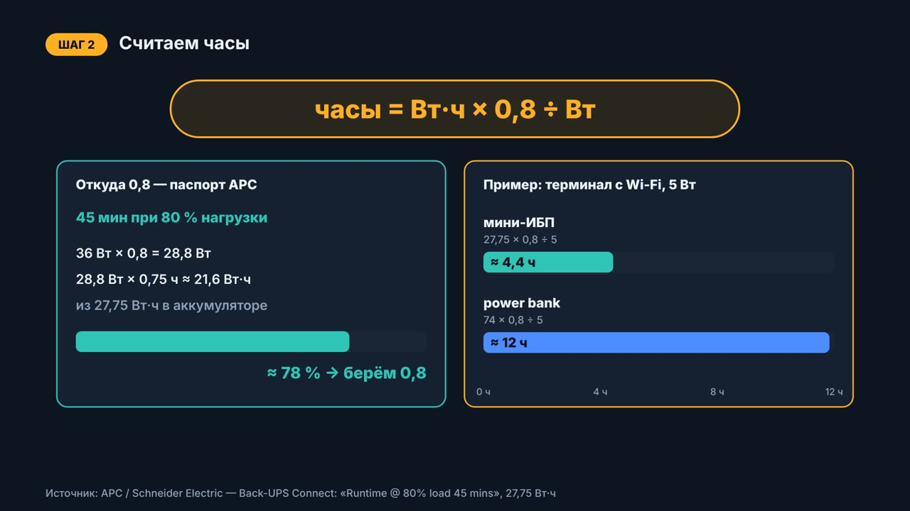
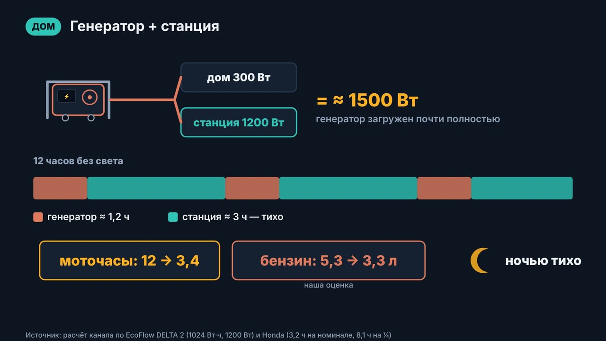

Алгоритм дома
Покрокові розрахунки для дому, якому не страшні відключення
Розбираємо, як порахувати й зібрати резервне живлення, обрати акумулятор та інвертор, не переплатити й не ризикувати проводкою. Кожен розрахунок — покроково, з формулами та джерелами.
Порахувати резервне живлення Читати алгоритм З чого почати? Помічник
Помічник — підказка для новачків: чотири запитання про вашу квартиру чи будинок, і він покаже, які випуски та калькулятори вам підходять.
Алгоритми
 Випуск 1 · електрика
Резервне живлення квартири: розрахунок покроково
Холодильник, роутер, світло й ноутбук на 6 годин відключення: який потрібен акумулятор та інвертор.
Випуск 1 · електрика
Резервне живлення квартири: розрахунок покроково
Холодильник, роутер, світло й ноутбук на 6 годин відключення: який потрібен акумулятор та інвертор.
 Випуск 2 · електрика
Зарядна станція чи власний комплект: що вигідніше
Ціна за ват-годину, розширення, швидкість заряджання, перемикання при відключенні та ремонт.
Випуск 2 · електрика
Зарядна станція чи власний комплект: що вигідніше
Ціна за ват-годину, розширення, швидкість заряджання, перемикання при відключенні та ремонт.
 Випуск 3 · опалення
Резервне живлення газового котла
Щоб будинок не вистиг без світла: акумулятор, інвертор, фазування та безпечне підключення.
Випуск 3 · опалення
Резервне живлення газового котла
Щоб будинок не вистиг без світла: акумулятор, інвертор, фазування та безпечне підключення.

Випуск 4 · інтернет Резервне живлення роутера Інтернет без світла: що живити, міні-ДБЖ на 12 В чи павербанк, скільки годин. Випуск 5 · залізо
Як влаштований інвертор і як читати його паспорт
Чиста синусоїда, вати при 40 °C, пік, холостий хід і чому потужним системам потрібні 24 або 48 В.
Випуск 5 · залізо
Як влаштований інвертор і як читати його паспорт
Чиста синусоїда, вати при 40 °C, пік, холостий хід і чому потужним системам потрібні 24 або 48 В.
 Випуск 6 · залізо
AGM чи LiFePO4: що вигідніше за 10 років
Цикли за паспортом, мороз і спека, втрати на заряджання і скільки разів доведеться купувати акумулятор.
Випуск 6 · залізо
AGM чи LiFePO4: що вигідніше за 10 років
Цикли за паспортом, мороз і спека, втрати на заряджання і скільки разів доведеться купувати акумулятор.

Випуск 7 · залізо Генератор чи зарядна станція Чи можна генератор на балкон, коли вистачить станції, як підключити генератор до будинку і навіщо йому напарник.НезабаромЯку зарядну станцію брати: 1, 2 чи 3 кВтЄмність, потужність і заряджання під ваші прилади та відключення.
Не знаєте, з чого почати? Помічник поставить чотири запитання — квартира чи будинок, скільки тривають відключення, що має працювати — і підкаже, які випуски та калькулятори вам підходять. Це підказка для орієнтиру, а не розрахунок.
Калькулятори
Резервне живлення квартири. Введіть свої прилади й час відключення — отримаєте ємність акумулятора, потужність інвертора і струм у дротах.
Відкрити калькуляторСкільки ват споживає. Холодильник, котел, роутер, телевізор, насос свердловини, чайник — паспортні цифри конкретних моделей і кнопка «до калькулятора».
Відкрити таблицюЯк ми працюємо
Цифри з першоджерелПаспорти й даташити виробників, норми та відомства з безпеки. Що не підтвердилося — не потрапляє в ролик.
Формули відкритіКожен крок розрахунку видно, його можна повторити з калькулятором або на папері.
Безпека понад усеОкремо кажемо, що можна зробити самому, а що — тільки електрику.